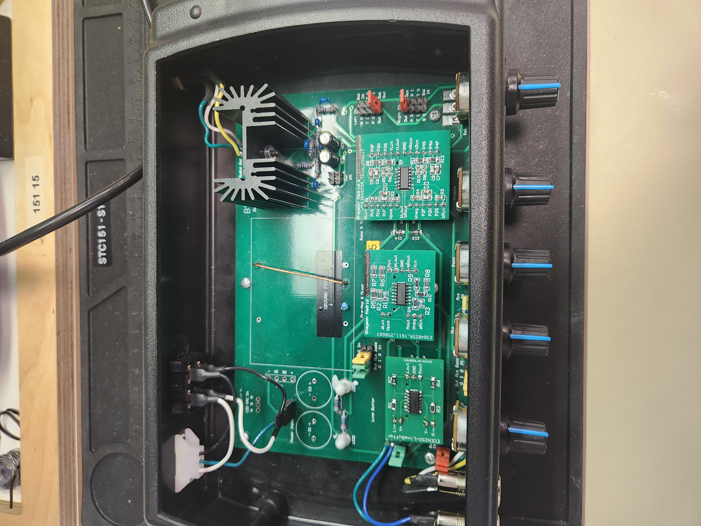

ECEN 299 Audio Mixer PCBs
What it does
Tools / Technologies
- Altium Designer
- Function Generator
- Oscilloscope
Images
More images are found within documentation reports below, including simulation and oscilloscope images.



Documentation/Reference Material
These reports were submitted to for satisfying the BYU-Idaho ECEN 299 Course, which this project was done for.